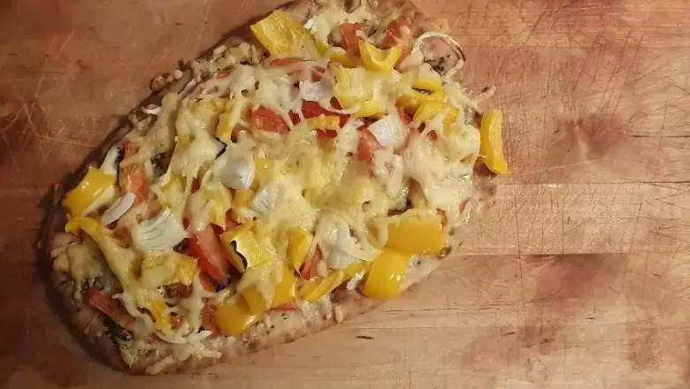

Naan-pizzapunten

Ingredienten
- 2 naanbroden
- 200 milliliter crème fraîche
- 1 eetlepel gedroogde italiaanse kruiden
- 6 plakken rauwe hammen
- 2 rode uien (in dunne ringen)
- 100 gram mozzarella (grof geraspt)
- olijfolie
Bereiding
- Verwarm de ovengrill. Bestrijk de naanbroden met de crème fraîche en bestrooi met de Italiaanse kruiden.
- Snijd de ham eventueel in repen en verdeel over het brood. Leg de uienringen erop en bestrooi met de kaas. Besprenkel met olijfolie.
- Leg de naanbroden naast elkaar op de bakplaat en zet ze niet te dicht onder de ovengrill, tot de kaas licht gesmolten is. Snijd de naanpizza's in stukken en serveer direct.